Visual scheduling for lights, switches, and climate devices in Home Assistant — for building managers, no technical background required.
Scheduler+ is a card on your Home Assistant dashboard. Each row is a schedule — a named set of on/off rules for one or more devices (lights, switches, or a thermostat). This is the screen you'll come back to most.
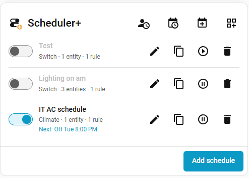
Each row shows, left to right:
The four icons in the card's header are shortcuts, covered in their own sections below:
| Icon | Opens |
|---|---|
| 👤🕐 | My preferences — your own weekday/weekend/working-hours defaults (§8) |
| 📅🕐 | Day view — a read-only report of what's scheduled on a day or week (§7) |
| 📅➕ | Quick event — a fast one-off on/off for a single date (§6) |
| ▦➕ | From template — start a new schedule from a saved template (§9) |
To add a brand-new schedule, use the Add schedule button at the bottom of the card.
A schedule ties one or more devices to one or more rules. Click Add schedule to open the editor.
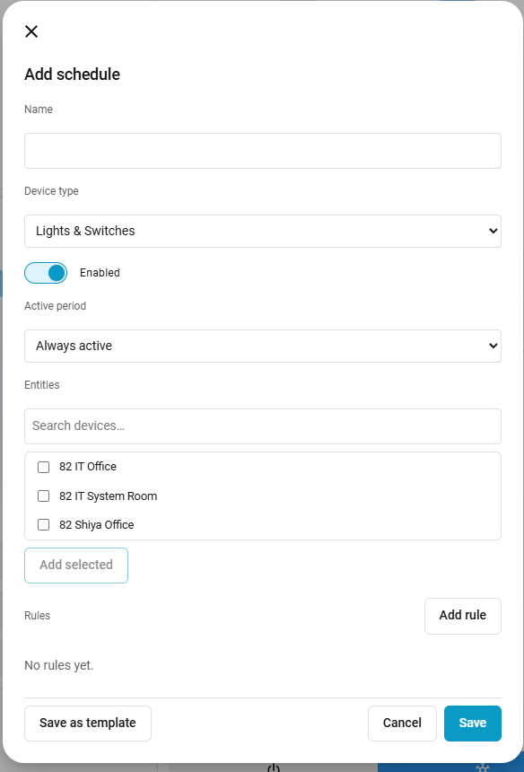
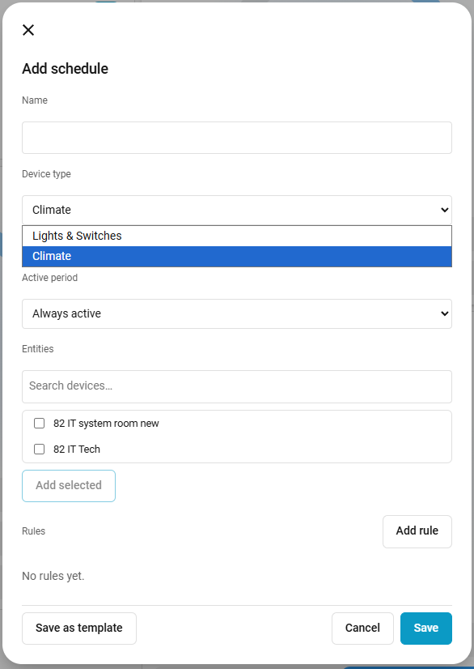
A rule says: on these days (or dates), turn on at this time, turn off at that time, and do this action. A schedule can have several rules — for example, one for weekdays and a different one for weekends.
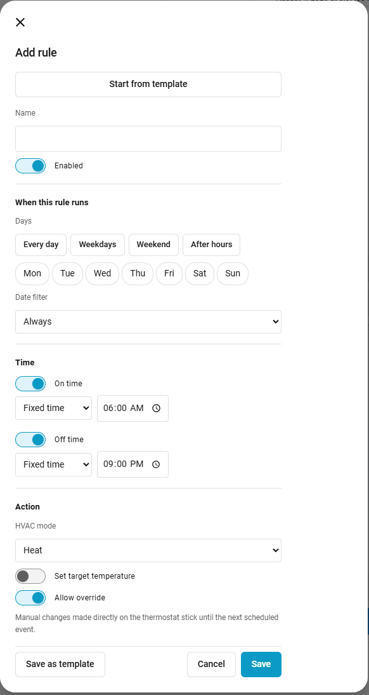
Give the rule a short name ("Weekday hours", "Weekend"). The Start from template button at the top lets you pre-fill everything below from a rule you've saved before — see §9.
Tap individual day chips, or use a preset: Every day, Weekdays, Weekend, or After hours (fills in your own working-hours start/end from My Preferences, §8). "Weekdays" and "Weekend" use your own saved day split from My Preferences, not a fixed Mon–Fri assumption.
By default a rule's Date filter is "Always" — it just follows the Days above, every week, forever. Changing it opens a panel with three more options:
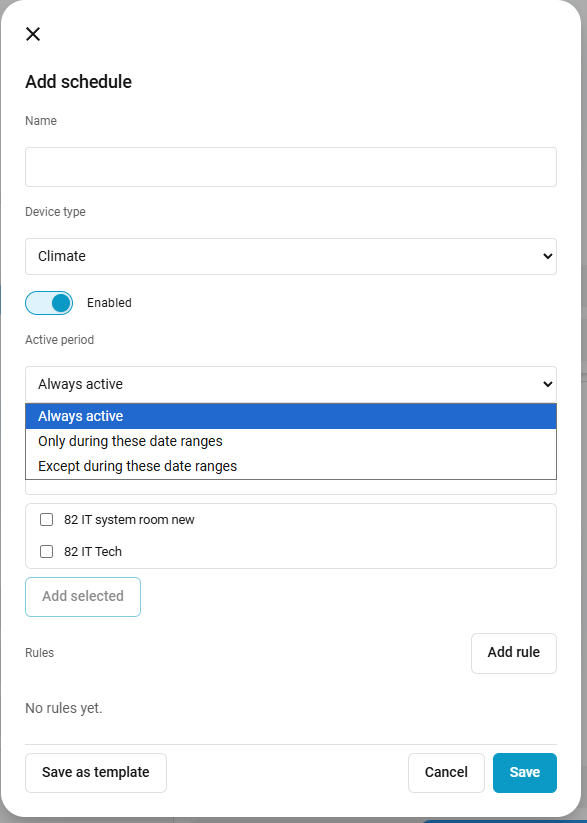
Inside that panel you can add:
Each rule has an On time and an Off time — you can turn either one off if you only want the rule to act on one side (see below). Each side's time can be:
What happens depends on the schedule's device type:
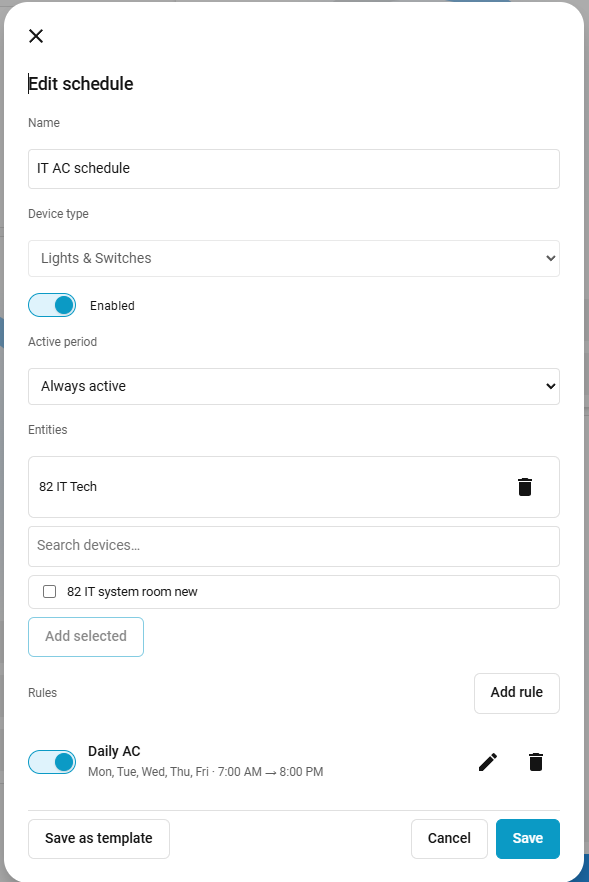
This is a schedule-level setting (not per-rule) for schedules that should only run during part of the year — "Summer Hours" vs. "Regular Hours" sharing the same rooms.
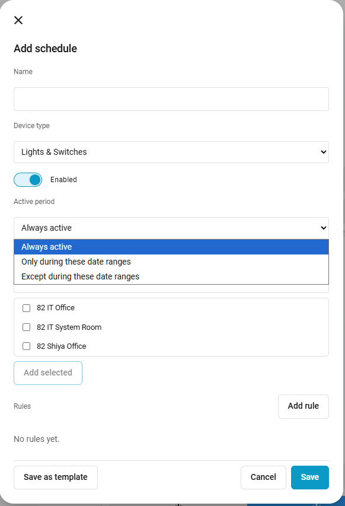
A schedule that's currently outside its active period shows an "Inactive until …" note on the card instead of a "Next event" line, so it's obvious at a glance why it isn't doing anything right now.
Click the pencil icon on any schedule row to reopen the editor. All the same fields from §2–§4 apply.
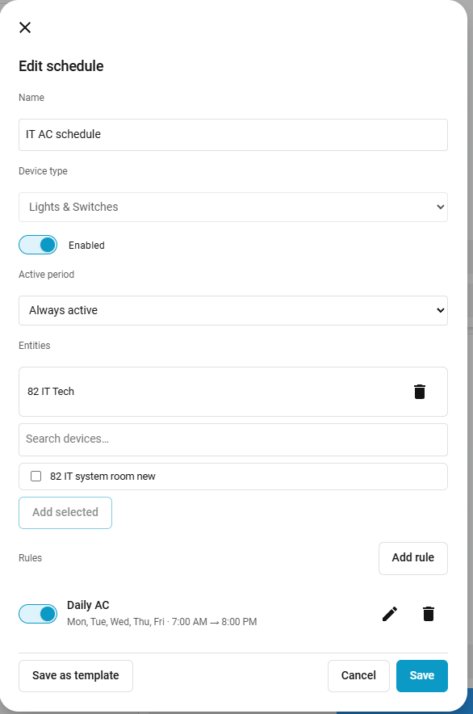
Once a rule is saved, its row shows a compact summary (days and times) plus its own switch, so you can disable just that one rule without touching the rest of the schedule.
Click the duplicate icon to open a new schedule pre-filled with the same device type and rules as the one you clicked — handy for cloning a setup to another room. Nothing is saved until you edit the entities/name and click Save, so duplicating never affects the original.
Sometimes you need to suppress a schedule temporarily — a snow day, a one-off closure — without touching its rules or remembering to turn it back on. Click the pause icon.
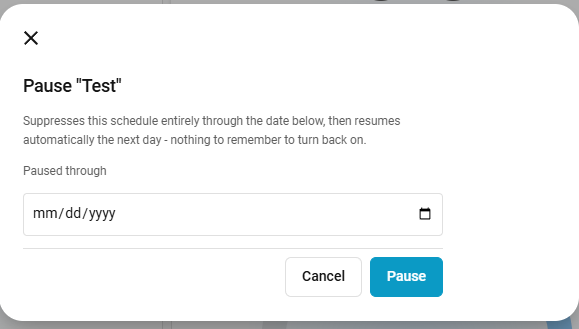
Pick the last date you want the schedule suppressed through, and click Pause. The schedule resumes automatically the following day — nothing to remember. While paused, the card shows a "Paused through …" note, and the pause icon becomes a Resume icon (▶) for a one-click early resume.
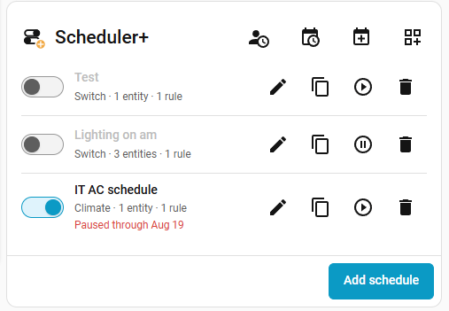
The switch on the left of each row is the fastest way to turn a whole schedule off or on. Unlike Pause, this has no end date — it stays off until you flip it back.
Click the trash icon and confirm. This is permanent — there's no undo.
For a one-off "just today" need — like keeping the gym lights on late for an event — Quick event skips the full Add schedule flow.
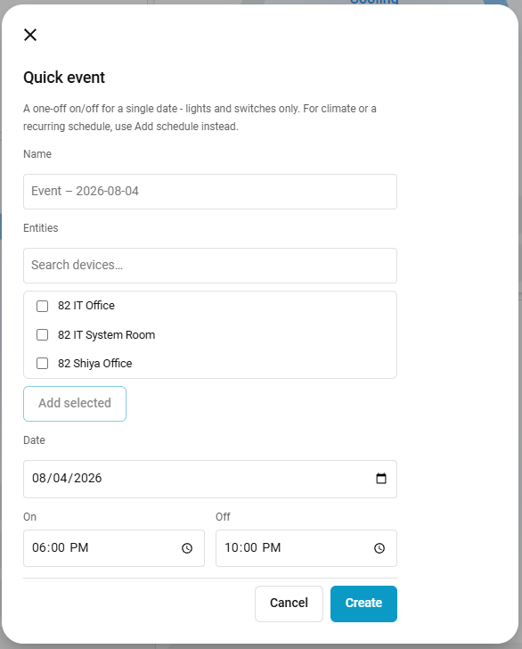
Under the hood a Quick event is just a normal schedule with one rule for one date — it appears in the regular schedule list afterward, and you can edit or delete it like anything else. It doesn't clean itself up automatically once its date has passed, so it's worth deleting old ones occasionally.
A read-only report answering "what's actually going to happen, and when" — across every schedule, grouped by device type. Opened from the calendar-clock icon.
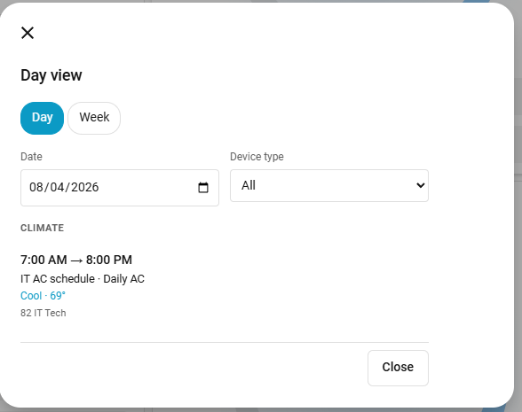
Each entry shows the on/off times, which schedule and rule produced it, the resulting action (e.g. "Cool · 69°"), and which entities are affected.
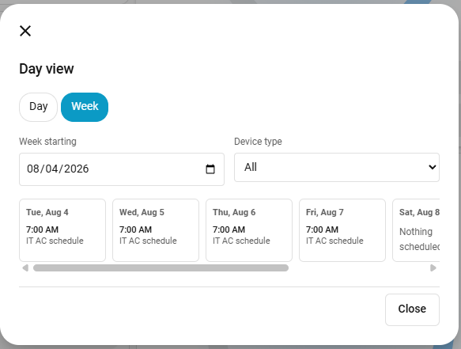
Click the Week toggle to switch views. Each column is one day; "Nothing scheduled" means exactly that for that day.
Your own weekday/weekend day split and working-hours start/end — used to power the Weekdays/Weekend/After hours quick-fill buttons when building a rule (§3). Opened from the person-clock icon.
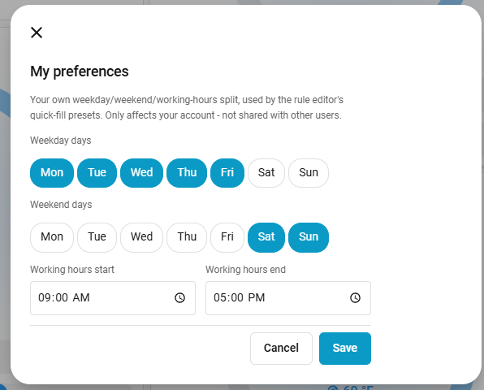
Templates let you save a rule — or a whole schedule's worth of rules — and reuse it later without rebuilding it from scratch.
Both the rule editor and the schedule editor have a Save as template button at the bottom. Saving from the rule editor stores just that one rule, reusable later via Start from template inside any other rule of the same device type. Saving from the schedule editor stores the whole rule set, reusable via From template on the card header when starting a new schedule.
From template (card header) shows your saved schedule templates with a Use button — picking one opens the normal Add schedule dialog pre-filled with that template's rules, so you still add the entities and review everything before saving. Start from template (inside the rule editor) works the same way for a single rule.
When you save a schedule, Scheduler+ checks whether any of its rules would overlap with a different schedule on a shared device — for example, a daily "off at 4pm" rule that would undo a one-off event wanting the same light on until 11pm.
If an overlap is found, a warning appears before the save completes, listing:
| Icon | Name | Does |
|---|---|---|
| 👤🕐 | My preferences | Your own weekday/weekend/working-hours defaults |
| 📅🕐 | Day view | Read-only day/week report of what's scheduled |
| 📅➕ | Quick event | Fast one-off on/off for a single date |
| ▦➕ | From template | Start a new schedule from a saved template |
| Icon | Does |
|---|---|
| ✎ | Edit this schedule |
| ⧉ | Duplicate this schedule into a new one |
| ⏸ / ▶ | Pause (or Resume, if already paused) |
| 🗑 | Delete this schedule |
| Text | Meaning |
|---|---|
| Next: On Fri, 6:00 AM | The soonest upcoming on/off moment across all of this schedule's rules |
| Inactive until Jul 1 | Currently outside its Active period seasonal window (§4) |
| Paused through Aug 19 | Manually paused (§5) — resumes automatically the day after |
| Schedule | A named group of entities plus one or more rules. |
| Rule | One on/off pattern within a schedule — days or dates, on/off times, and an action. |
| Entity | An individual device — one light, one switch, one thermostat. |
| Template | A saved, reusable rule or rule set, with no entities of its own. |